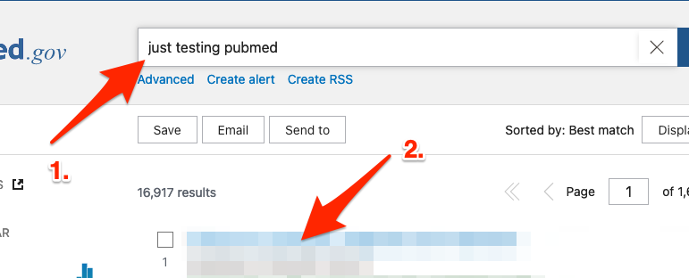
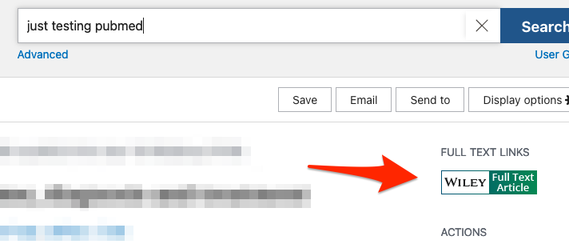
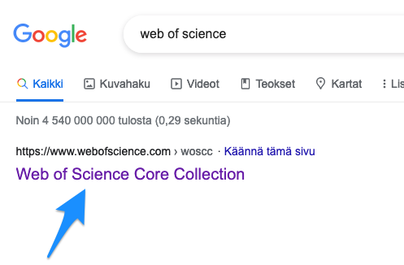
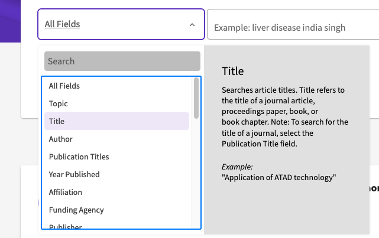
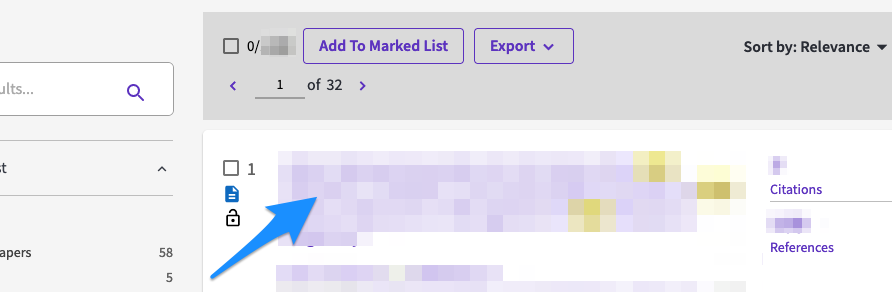
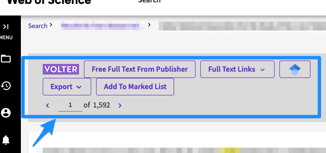
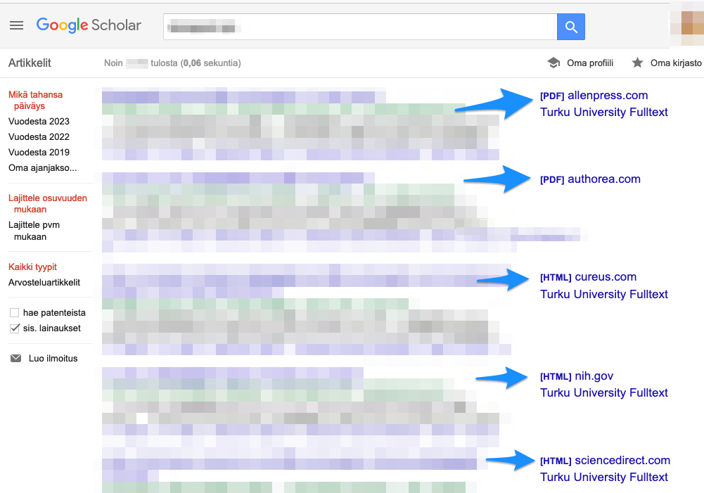
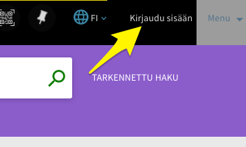
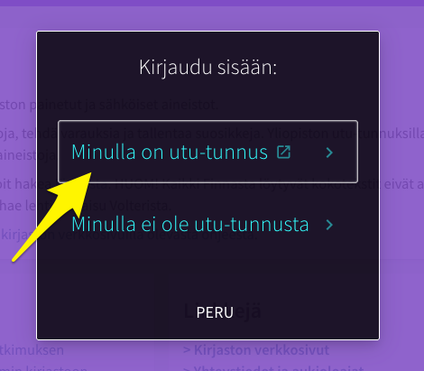
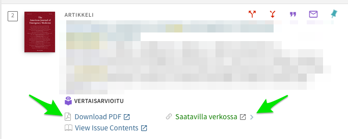

3 Artikkelien haku
Edellisessä luvussa esittelin, miten utu:n VPN-yhteys muodostetaan.
Kun utu:n VPN-yhteys on muodostettu, monenlaisten portaalien kautta tarjoutuu suora pääsy tieteellisiin artikkeleihin.
Esittelen seuraavassa muutamia näistä.
3.1 PubMed
- Googleta “Pubmed” tai klikkaa seuraavaa linkkiä:
https://pubmed.ncbi.nlm.nih.gov/
- Etsi hakusanoilla jokin artikkeli ja klikkaa artikkelia (vrt. kuva alla, artikkelin nimi sumennettu tässä).

- Kun olet klikannut artikkelin nimeä, pääset näkymään jossa näkyy oikeassa marginaalissa “Full Text Links”, klikkaa niistä jotakin:

- VPN-yhteyden ansiosta sinun pitäisi nyt päästä suoraan artikkelin elektroniseen versioon.
3.2 Web of Science (WoS)
- Googleta “web of science” (ks. kuva alla) tai klikkaa suoraan seuraavaa linkkiä:

- Avautuu hakunäkymä, jossa pääset valitsemaan ensin “Fieldin” jonka perusteella haetaan - on mahdollista suorittaa haku esim. lehtiartikkelin otsikon tai kirjoittajan nimen perusteella (tai jopa PubMed ID:n perusteella, jos olit jo löytänyt jonkun artikkelin PubMedin kautta ja haluat siitä lisää tietoa WoS:n puolelta):

- Syötä joku haku ja valitse sitten jokin löytämäsi artikkeli klikkaamalla sitä (alla hakutulos sumennettu):

- Voit tämän jälkeen nähdä erilaisia Full Text -tyyppisiä linkkejä, joita voit kokeilla päästäksesi lukemaan artikkelia:

3.3 Google Scholar
- Joskus olla paikallaan etsiä artikkeleita Google Scholarin kautta. Googleta “google scholar” tai klikkaa alla olevan linkkiin:
- Jälleen tarjoutuu mahdollisuuksia päästä klikkaamaan artikkelien täysversioihin (hakutulokset sumennettuna):

3.4 Utu Volter
- Googleta “utu volter” (ks. kuva alla) tai klikkaa suoraan seuraavaa linkkiä:
- Palveluun pitää vielä kirjautua sisään oikeasta ylänurkasta:

- Klikkaa seuraavaksi kohtaan “Minulla on utu-tunnus”, ja kun web-selaimen URL-osoitteena on utuvolter.fi-alkuinen URL-osoite, uskallan syöttää utu:n tunnukseni ja -salasanani, jolloin pääsee Utu Volterin palveluita käyttämään:

- Kun etsii jotakin artikkelia hakusanalla, avautuu yleensä näkymä, josta pääsee klikkaamaan joko “Download PDF” tai “Saatavilla verkossa”. Kumpikin linkki yleensä toimii, mutta näistä ensimmäinen on suorempi linkki artikkeliin:

3.5 Suora googletus
- Joissakin tilanteissa suora googletus on nopein keino löytää etsimänsä artikkeli. Tämä metodi ei kaipaa erikseen esittelyjä.
Lehtiartikkelien haku utu:n VPN-yhteydellä ja viitteidenhallinta by Ville Langén is licensed under CC BY-SA 4.0